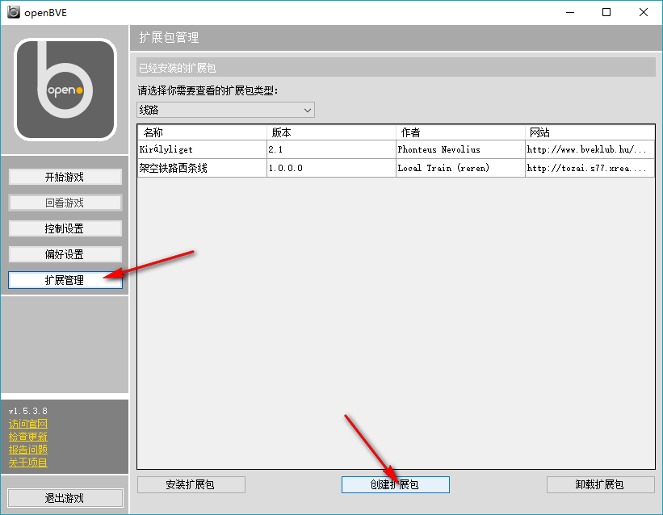
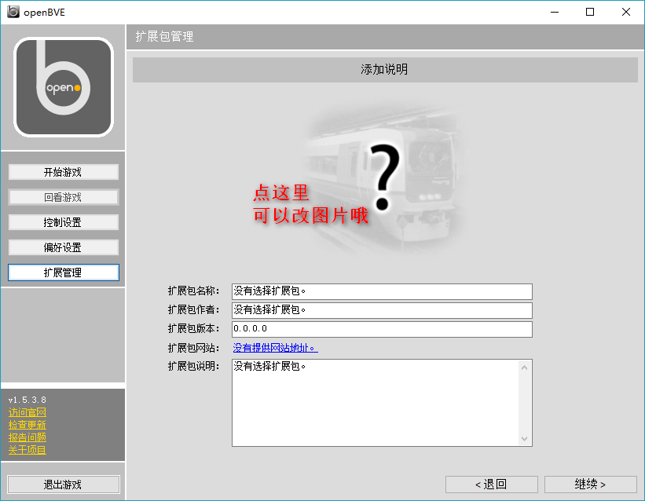
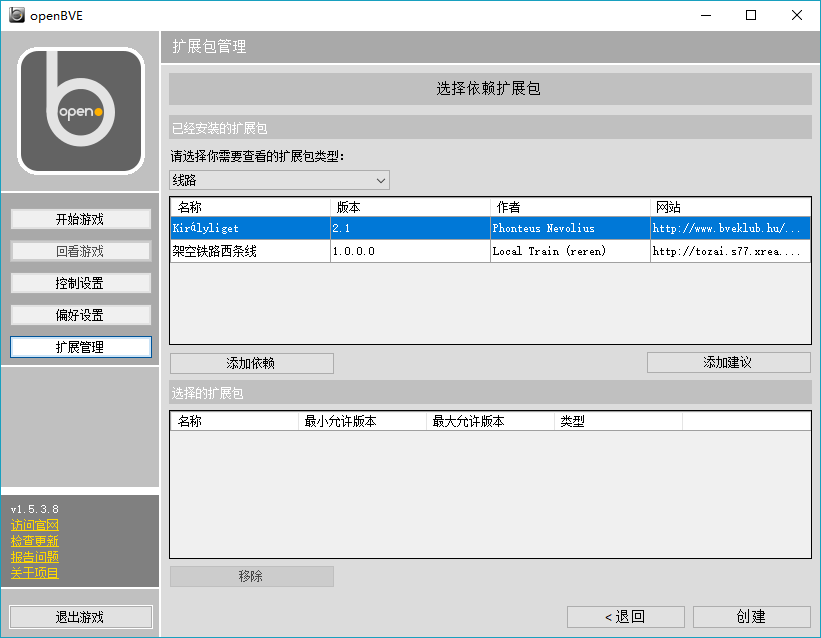
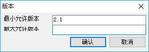

OpenBVE的最新版本已经自带一个扩展包管理工具，该工具可以让大家方便地安装和卸载各类线路资源，让OpenBVE的文件组织就像使用压缩包的Hmmsim一样清晰，而且达到想装就装、想卸就卸、互不干扰的目的，很是方便。
要使用此工具，首先请把您的OpenBVE更新。老旧版本的OpenBVE并不支持此功能。
- 创建封包
打开OpenBVE，在左侧选择“扩展管理”，然后点击下方的“创建扩展包”。

提示文字相当浅显易懂，应该不用我赘述了。如果您还是不懂，请您重修您的幼儿园大班课程。
如果打包转载线路，您必须得先把那个线路装在自己机子上的OpenBVE上，就当试一试工作正不正常吧。别忘了那几个文件夹是这个线路对应着的。
好吧，还是有需要强调的。就是这个“这个扩展包是要替代一个已经存在的扩展包的吗？”，说白了就是“你这个包是第一版还是后续升级的第二版、第三版？”。一个线路可能您作为作者会更新好几次，OpenBVE已经为您考虑到了这个问题。您发布第一个版本时选择“并不是”来创建全新的扩展包，而后面更新的时候就要选择“是的”，然后选择自己原先第一个版本打出的包，这样OpenBVE就会给它们建立一个联系关系，在安装时会自动卸掉旧版的包，让更新正常进行。这是一个线路有好几个Ver时必须进行的操作。如果您是要转载线路，就打包这一次，就选“并不是”。 - 添加文件
然后就是选文件加文件，选输出目录啦。提醒一下：你的线路可能有一些“依赖”，就是一些不是自己做的而是别的作者放出下载安装的内容（例如BRSignals 英式铁道信号机），那么不要放进自己的包里！理由很简单——如果这个信号机我也用你也用一百个线路开发者都在用，那一百个人打的包里都包含这几个重复的文件，岂不太累赘了？所以，就不打包他们。本网站有指明依赖内容的功能。把它的下载地址摆上面，让要玩的人自己下，下完一遍就不用再费劲了。
还有，因为很多线路的开发过程中线路开发和列车开发都是由不同的人合作完成的，所以OpenBVE也保留了这一传统。你必须将线路和列车分开打成两个包。好处倒也是有的，如果线路更新了，列车还是原样，那列车包就不用重新下载了。
继续下一步！这个也非常浅显易懂。

没啥好说的。别忘了点击上面的大问号可以加张题图，第一印象可是很重要的！放一张好看一点的上去。
几行字都认真填一填。如果要在“扩展包网站”里写本站的网址的话，注意一下本站的“创建线路”和“编辑线路上传文件”页面是分开的，也就是说你可以先占上茅坑等一会儿再拉屎……呸呸呸，可以先提交注册链接，等一会再打包上传线路。这时候把那个“routeview.php?id=......”填上去就可以了。 - 指明依赖

这就是最后一步了。如果上面我讲过的那个依赖内容本身就是扩展包格式（例如BRSignal，这真是个绝佳的例子），那么就太好了，你应该在这里选中它，然后点击“添加依赖”，以防某些智障玩家没下那个玩意儿就想玩你的线路（当然，会出一堆错，比如缺失BRSignal就会导致信号灯都消失）然后还觉得你有毛病……添加完之后OpenBVE就会检查这位小学生有没有安装依赖内容，没安装就别想玩！对了，由于您依赖的这个包以后可能还会更新，我个人比较建议您在添加依赖时删掉“最大允许版本”的限制，否则到时候人家一更新您的线路就玩不了了（因为限制了嘛），您不得给骂死。
